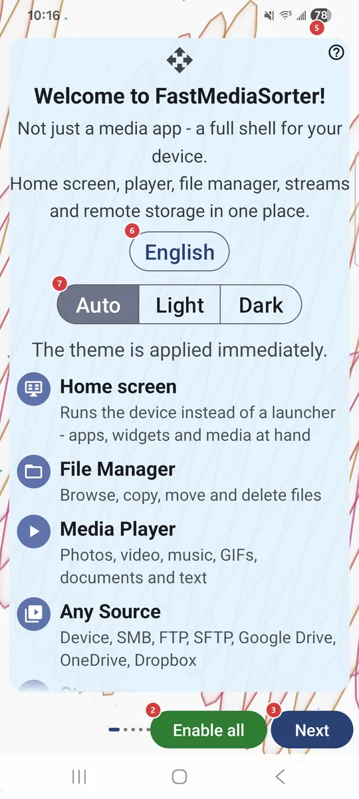
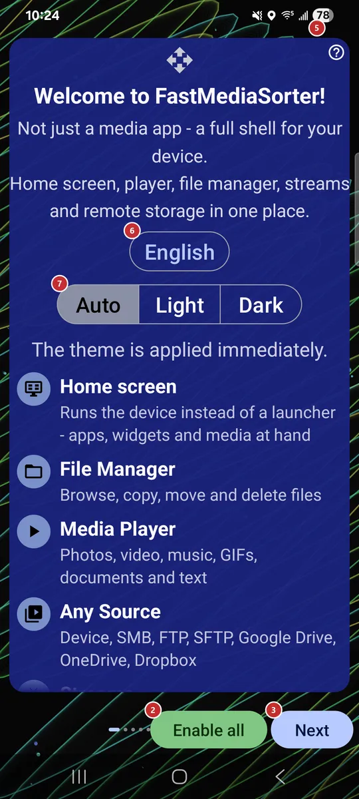

9Primary windowChooses what the app opens as: device home screen, in-app desktop or resource list.
This choice appears only in editions that include the home surface. The recommended option is marked.
The welcome wizard runs on first launch and walks you through language, theme, device profile, network sources, capabilities, permissions and the default player. You can open it again from Settings.


It is hidden on the first page, where there is nothing to go back to.
It is on the first page only. First it explains what will happen, then lets you confirm your device profile, and only after that turns everything on, asks for the permissions and the default-app choice, and finishes. The pages in between are skipped.
On the last page it is replaced by Finish.
Permissions are granted on their own page, so Finish asks for nothing more. It appears on the last page in place of Next.
You get the usual order of the wizard and what each control does.
The wizard reloads in the language you pick. You can change the language later in Settings.
Auto follows your device. The theme is applied immediately, so you see the result at once.
Tiles cover a personal smartphone, tablet, TV box, car head unit, photo frame, e-book reader and more, and the one that fits best is marked as recommended. A profile tunes many defaults at once. Other keeps the settings as they are.
This choice appears only in editions that include the home surface. The recommended option is marked.
For example a shared folder on a Windows PC, a NAS such as Synology or QNAP, or a USB disk plugged into your router.
For example a hosting account over FTP, your own home server over SFTP, or a camera that uploads photos to an FTP folder.
For example, sign in to Google Drive once and browse your photo backup like any other folder. The row is hidden in editions without cloud support.
If your media sits on a Windows PC, the companion shares those folders to this device in a couple of clicks, with no server setup.
Read it when you want to move files between your own devices.
This switch only permits the mode, so you still turn it on for each resource.
Play music and audio, and sort tracks into folders.
Play videos and sort clips with the built-in player.
Open PDF, text, e-books and office files.
Recognize text and copy it. The recognition pack downloads right on this page, with progress shown under the row, and the feature turns on once the download has succeeded.
Works offline. The translation pack downloads right on this page, and the feature turns on once the download has succeeded.
Play internet streams and import the built-in catalog. The catalog is imported right on this page, with progress shown under the row.
They are collected on your device and nothing is sent automatically.
The swipes open the menu and take a screenshot, normal or silent. Android may ask for the Display over other apps permission first.
Install the ones you want now, or leave them for later: you can also reach the same list from Settings.
First comes one Android dialog for the regular permissions, then the special ones open as separate system screens, one at a time. Turn the switch on there and press Back to continue.
Use it when you want to review or change a permission yourself, or when Android no longer shows its own request.
Each row says what the permission is for and has its own button to grant it or open the matching settings. Opting out means leaving a permission off; nothing is hidden from you.
Android shows its own dialog: pick FastMediaSorter and tap Always. This is not permanent - Android keeps the choice in its own settings, and you can change it back there.
Android shows its own dialog: pick FastMediaSorter and tap Always. This is not permanent - Android keeps the choice in its own settings, and you can change it back there.
Android shows its own dialog: pick FastMediaSorter and tap Always. This is not permanent - Android keeps the choice in its own settings, and you can change it back there.
Android shows its own dialog: pick FastMediaSorter and tap Always. This is not permanent - Android keeps the choice in its own settings, and you can change it back there.